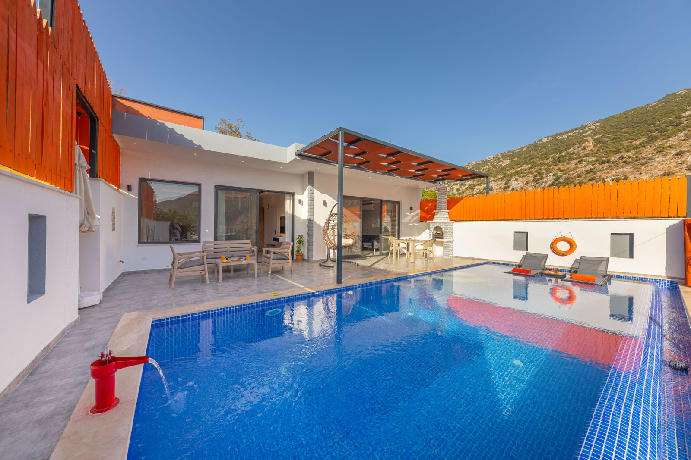
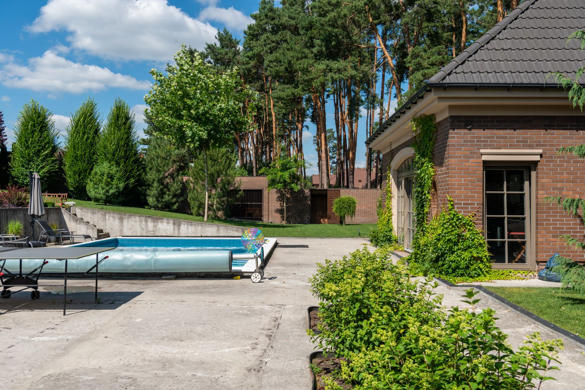

Limpeza de piscinas
Conte como está a piscina e o que precisa de atenção. O serviço, os materiais e as condições de atendimento são combinados após entender a sua necessidade.
Consultar limpeza de piscinas ↗
Limpeza e manutenção de piscinas em Palhoça. Converse com a Jhonys sobre o cuidado que sua piscina precisa e combine o atendimento.
Escolha o assunto que deseja conversar. Os detalhes, valores e a disponibilidade são confirmados diretamente com a empresa.
Conte como está a piscina e o que precisa de atenção. O serviço, os materiais e as condições de atendimento são combinados após entender a sua necessidade.
Consultar limpeza de piscinas ↗Converse sobre os cuidados e a frequência adequada ao uso da sua piscina. Escopo, disponibilidade e valores são definidos diretamente com a Jhonys.
Consultar manutenção ↗A Jhonys Piscinas atua com limpeza e manutenção de piscinas em Palhoça, Santa Catarina.
Cada piscina tem uma rotina. Informe seu bairro, o tamanho aproximado e a situação atual para consultar o atendimento. Os detalhes são alinhados antes do agendamento.
Vamos conversar ↗
Fotografias ilustrativas de contexto. Não representam a equipe ou trabalhos realizados pela Jhonys.
Fotografias Pexels. Autores, fontes e licença ↗
Horários e disponibilidade são combinados pelo telefone (48) 99125-7001.
Ligar: (48) 99125-7001 ↗Jhonys Piscinas — Limpeza e Manutenção.
Palhoça/SC.
Prepare sua conversa pelo WhatsApp.
Conversar no WhatsApp ↗Você revisa a mensagem antes de enviar. O site não armazena seus dados.
Limpeza e manutenção de piscinas. O escopo de cada atendimento é combinado conforme a situação da piscina.
Em Palhoça/SC. Informe seu bairro para consultar a disponibilidade e combinar o atendimento.
Entre em contato pelo telefone (48) 99125-7001. Informe o local, o tamanho aproximado da piscina e o serviço desejado.
Consulte a possibilidade e a frequência de atendimento diretamente com a Jhonys. Condições e valores são alinhados antes de agendar.
Limpeza e manutenção de piscinas em Palhoça/SC. O mapa mostra a cidade como referência de atendimento, não um endereço comercial. Consulte a disponibilidade para seu bairro.
Abrir no Google Maps ↗